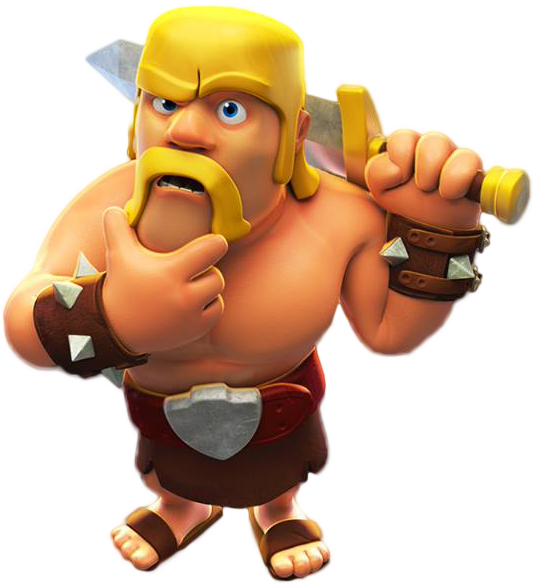

Допомога

Перш ніж вступити в клан, відновіть фортеця клану!
У себе на карті ви виявите стару зруйновану фортецю. Торкніться та виберіть «відновити» - це коштує 10000 золота. Як тільки фортеця клану буде відновлена, торкніться кнопки «Клан». Ви отримаєте можливість знайти існуючий клан або створити власний.
Якщо старійшини почали виганяти гравців з клану, залишається не так багато варіантів. Гравці з більш високою роллю можуть виганяти тих, хто нижче рангом. Старійшина може вигнати учасника, співкерівник - старійшин і учасників, і так далі. На жаль, ми не можемо заборонити учасникам кланів виганяти гравців.
Звичайно, недобре, якщо гравці зловживають своєю владою, але правила цього не забороняють. Найкращий захист від цього - уважно вибирати тих, кого ви приймаєте в клан. Якщо у вас відкритий клан, подумайте про зміну його типу на клан на запрошення, щоб відбирати вступають. А ще подумайте про те, щоб додати своїх приятелів в Game Center, Google+ або на Facebook, тоді ви в будь-який момент зможете знову знайти один одного.
А ще, щоб обмежити подібна поведінка, ми ввели для старійшин обов'язковий інтервал у 20 хвилин між двома вигнання гравців. Ця перерва повинен дозволити іншим членам клану вжити відповідні заходи, якщо якийсь гравець зловживає своєю владою.
Підвищуйте гравців мудро.
Коли один з ваших соклановцев запросить підкріплення, у вікні чату з'явиться повідомлення:
Торкнувшись «Пожертвувати», ви можете вибрати, які війська ви хочете відправити в кланову фортеця свого товариша:
Війська з'являться в кланової фортеці вашого соклановцев і пропадуть з вашого табору. За це ви отримаєте досвід.
Пам'ятайте, що війська для війни кланів жертвуються окремо.
У клані може бути до 50 чоловік, і у кожного з них буде свій ранг. Всього є чотири рангу. Торкнувшись певної людини з клану, ви побачите, які функції ви можете застосувати до цього гравця у відповідність з вашим рангом.
Наприклад, ось що побачить глава клану, торкнувшись імені співкерівника:
Обов'язки кожного з рангів:
Учасника
Приєднавшись або заново увійшовши в клан, Ви автоматично стаєте його учасником. Навіть якщо до цього ви були старійшиною, співкерівником або главою іншої або цього ж клану, коли ви приєднуєтеся до клану, то спочатку стаєте його рядовим учасником.
Старійшина
У старійшини більше можливостей, ніж в учасника, але менше, ніж у співкерівника або глави. Старійшина може:
запрошувати гравців у клан;
приймати гравців у клан;
виганяти гравців з клану (кожні 20 хвилин).
Співкерівник
У співкерівника більше можливостей, ніж у старійшини, але менше, ніж у глави. Співкерівник може:
запрошувати гравців у клан;
приймати гравців у клан;
підвищувати гравців до старійшин;
підвищувати гравців до нових співкерівників;
виганяти учасників і старійшин;
відправляти повідомлення всьому клану. Пам'ятайте, що повинно пройти 12:00 перезарядки, перш ніж ви зможете знову написати повідомлення.
Глава
Глава клану має багато можливостей, відповідальності і приймає найбільше рішень в клані. Глава може:
запрошувати гравців у клан;
приймати або відхиляти запити про вступ;
підвищувати учасників до старійшин;
підвищувати гравців до старійшин;
складати з себе обов'язки глави з передачею повноважень комусь із співкерівників. Але це потрібно робити обережно, та як вся влада буде втрачена;
відправляти повідомлення всьому клану. Пам'ятайте, що повинно пройти 12:00 перезарядки, перш ніж ви зможете знову написати повідомлення.
Досвід клану нараховується за успішну участь у війнах. Всі клани не залежно від попередніх заслуг починають з 1 рівня досвіду. Досвід заробляється за наступною схемою:
Отримаєте перемогу над ворожою військовою базою, щоб отримати 2-5 досвіду: 5 досвіду за перемогу над 5 самими укріпленими базами; 4 досвіду за перемогу над базами з рейтингом 6-15; 3 досвіду за перемогу над базами з рейтингом 16-25; 2 досвіду за перемогу над базами з рейтингом 26-50.
Кількість отриманого досвіду розраховується на основі виграних у суперника зірок. Зірки зірками - досвід це завжди добре, але виграти війну І отримати досвід ще краще. Чим більше зірок і перемог ви завоюєте, тим більше досвіду і привілеїв ви отримаєте.
Завдяки цим функціям гра стане ще більш азартної і цікавій! Докладний список привілеїв можна знайти в розділі «Мій клан» вашого профілю.
Додаткова інформація:
-Прівілегіі Діють тільки на членів клану: якщо ви покинете клан, зберегти їх вам не вдасться.
-Прівілегіі Нараховуються накопичувальним чином: при підвищенні вашого рівня старі привілеї не зникають. У вас їх просто стає більше.
-Прівілегіі Приносять користь не тільки під час Воєн кланів: вони згодяться і під час щоденних боїв.
-Прівілегія «Покращення пожертвуваних військ» не діятиме на пожертвування війська, вже достигнувшие максимального рівня.
-Ігрокі НЕ будуть сповіщені про те, що спрацювала заслужена кланом привілей. Якщо, приміром, ви отримуєте Еліксир за пожертву військ, це відбудеться автоматично, без появи спливаючих повідомлень.
Додаткову інформацію про привілеї та про те, як саме вони вплинуть на ваш клан можна знайти на сторінках нашого форуму за адресою: http://forum.supercell.net/showthread.php/567168-Full-information-on-Clan-Levels- and-Perks
Після того як ви покинули клан, системі може знадобитися якийсь час, щоб зареєструвати це. Тому якийсь час ви не зможете вступити в інший клан. Також, якщо ви хочете повернутися в клан, з якого були вигнані, вам доведеться почекати 24 години перш ніж знову спробувати вступити до нього.
Якщо ви намагаєтеся вступити в клан, куди приймають тільки за запрошенням, то пам'ятайте, що ви можете подати заявку тільки в один клан. Ви не зможете відправити нову заявку, якщо все ще перебуваєте в клані, або якщо ваша заявка ще на розгляді у вікні чату, навіть у тому випадку, якщо її відхилили. Але якщо вас особисто запросить глава або старійшина, то ви можете вступити в клан відразу ж.
Крім того, клан може одночасно розглядати не більше 10 запитів на вступ (запити, надіслані понад того, не будуть оброблені належним чином).
Просто почекайте трохи: ви зможете вступити в інший клан швидше, ніж думаєте.
За рішенням голови або співкерівника для клану може бути встановлений статус «на запрошення»: це дозволяє контролювати, хто вступає в клан. Ви можете попросити прийняти вас в клан (якщо у вас досить трофеїв), відправивши запит. Відправлений запит з'явиться в чаті клану. Право приймати або відхиляти запити є тільки у глави, співкерівників або старійшин клану.
До тих пір, поки ваш запит буде видний в чаті клану, ви не зможете відправити новий запит цьому або будь-якому іншому клану. Вам доведеться почекати, поки запит буде відхилено або зникне, або поки вас не покличе в клан хтось ще.
Ось кілька порад по знаходженню соклановцев:
Додайте своїх друзів з Facebook, Game Center або Google+. Просто торкніться кнопки трофеїв, виберіть рядок друзів, свого друга і торкніться «запросити» (пам'ятаєте, що ви можете запрошувати тільки тих гравців, які ще не в клані).
Відвідайте нашу сторінку Facebook - там ви знайдете купу народу, який можна запросити в клан!
Використовуйте глобальний чат, щоб скликати гравців. Однак пам'ятайте, що якщо ви використовуєте чат для скликання гравців багато разів, на вас можуть поскаржитися.
Окуляри клану розраховуються згідно наступної таблиці:
Це означає, що трофеї 10 кращих гравців клану найзначніші в загальному рахунку клану. Клан, що складається з сильних гравців на перших місцях, навіть з більш слабкими гравцями на нижчих місцях все одно матиме хороші показники.
Якщо ви не можете знайти потрібний клан в звичайному пошуку, то скористайтеся розширеним пошуком, щоб скоротити коло пошуку відповідно до розміру клану, трофеями та іншими деталями.
А ще ми додали пошук клану по ярлику для більш точного пошуку. У кожного клану є унікальна мітка для пошуку, знайти її можна на сторінці профілю клану. Використовуйте все це для пошуку, і ви завжди знайдете те, що шукаєте.
Ми постійно працюємо над поліпшенням пошуку, намагаючись не ускладнити користування ним, і ми сподіваємося, що останні поліпшення будуть корисні.
Є кілька способів отримати кристали безкоштовно:
Якщо фортеця клану порожня, хоча повинна бути повна солдатів, перевірте хід бою - можливо, вони були використані для нападу або захисту. Також переконайтеся, що ви їх бува не видалили.
Якщо не вистачає декількох воїнів, а фортеця більше не приймає солдатів, хоча ще не заповнена, це означає, що ви прийняли більше пожертвувань, ніж вміщається в фортецю. Воїни, яким не вистачило місця, встануть в чергу, чекаючи, коли ви використовуєте тих, хто вже є в фортеці.
Якщо під час створення клану гра говорить, що назва не підходить, просто спробуйте інше. Можливо, то назва, яке ви ввели, починається з особливого символу (або решітки), або в ньому є послідовність символів, заборонена в одному з численних мов Clash of Clans.
Ми дуже хочемо дати вам максимальну свободу у виборі назви клану. Але в той же час нам доводиться враховувати думку гравців з самими різними мовами і культурою з усіх країн світу. Спробуйте іншу комбінацію, ви напевно зумієте знайти щось підходяще для вашого клану.
Ви можете поділитися своїм повтором з кланом після того, як на вас напали, або після того як напали ви.
Для цього відкрийте «Хід оборони» або «Хід атаки», торкніться зеленого меню поряд з ім'ям гравця, потім «публікувати повтор». Повтор з'явиться в чаті клану, щоб усі могли його переглянути. Пам'ятайте, що якщо ви поділилися повтором, зробити це ще раз можна тільки через 30 хвилин.
Лічильник пожертвувань кожного клану скидається після закінчення сезону ліг, наприклад, кожні два тижні. Крім того, пожертвування під час війни кланів вважаються окремо від звичайних пожертвувань в селі.
Якщо глава вашого клану ніколи не грає або просто не проявляє активність, і через це ваш клан не розвивається, можемо запропонувати вам кілька варіантів.
Оскільки можливості понизити главу немає, найпростіше буде створити новий клан. Ви можете обговорити це з соклановцев через Game Center, Google+ або Facebook. Таким чином ви зможете запросити їх у новий клан і почати все з початку.
А ще краще, якщо ви зв'яжетеся з головою клану через соцмережі, якщо ви ще цього не зробили. Якщо ви зможете вийти з главою на зв'язок, то зможете повідомити йому, що вашому клану потрібна допомога.
Привілеї можуть бути вагомими, але ми налагодили їх так, щоб вони не порушили крихкий баланс сил між кланами, і разом з тим приносили необхідну допомогу вашому клану. Ми дуже старалися, щоб привілеї були і складними, і чесними одночасно.
Якщо у вашого супротивника є привілеї, яких поки немає у вас, це означає лише те, що вам потрібно постаратися, щоб їх відкрити. Привілеї доступні всім, це досягнення і нагорода, свого роду приємне доповнення до змагальному духу Clash of Clans. Привілеї піднімають ставки, а ще радують особливо активних гравців. Чим більше атак у війнах виграє ваш клан, тим більше досвіду додається в копілочку для загального досягнення.
Ми впевнені, що працюючи в команді заради спільної мети, ви отримаєте привілеї швидше, ніж думаєте.
Якщо ваш клан «відкритий», то варто задуматися про зміну його типу на клан на запрошення або закритий - так буде простіше вибирати тих, хто буде приєднаються або виходити.
Ви також можете фільтрувати експресивну лексику, використовуючи відповідну функцію в налаштуваннях гри.
Також пам'ятайте, що якщо гравця вигнали, то протягом 24 годин він або вона не може знову вступати в клан. Якщо заявка відхилена, то гравцеві теж доведеться почекати добу до відправлення нової. Ми сподіваємося, що це дещо охолодить запал грубіянів, і вони перестануть дратувати інших членів кланів.
Якщо у вас виникла якась із перелічених нижче проблем, будь ласка, надішліть нам знімок екрана з подією І сторіночку профілю винного гравця. Нам доводиться стежити за великою кількістю вікон чатів, і тому обійтися без вашої допомоги буде складно.
Експресивний мова (лайки, обзивання, коментарі на адресу нації чи раси чи просто непристойні речі)
Загрози
Вимога поділитися особистою інформацією або даними Game Center / Google
Можемо вас запевнити, що ми приймемо необхідні заходи проти неприйнятної поведінки.